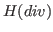
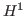

-Conforming First-Order System Least Squares
First-order system least squares (FOSLS) is a commonly used technique in a wide range of physical applications. FOSLS discretizations are straightforward to implement and offer many advantages over traditional Galerkin or saddle point formulations. Often these problems are formulated in spaces and -conforming elements are used. These elements have lesser regularity assumptions than the commonly used

-conforming elements and are therefore believed to be more suited for singular problems arising in many applications. This talk will compare the approximation properties of the -conforming Raviart-Thomas and Brezzi-Douglas-Marini elements to -conforming piecewise polynomials in a -setting. Furthermore a -formulation for these problems will be used and compared to the -formulation. For the comparison typical Poisson/Stokes problems are examined and singular solutions will be addressed by adaptive refinement strategies.